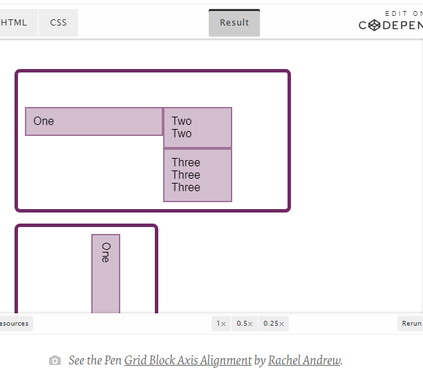
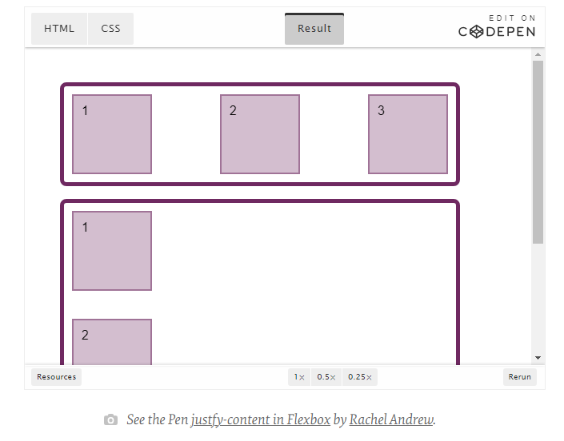

Why choose flexbox? In a perfect world of browser support, the reason you'd choose to use flexbox is because you want to lay a collection of items out in one direction or another. As you lay out your items you want to control the dimensions of the items in that one dimension, or control the spacing between items.
The effect of this keyword is dependent of the layout mode we are in: In absolutely-positioned layouts, the keyword behaves like start on replaced absolutely-positioned boxes, and as stretch on all other absolutely-positioned boxes.
align-items: stretch; The flexbox items will stretch across the whole cross axis. By default, the cross axis is vertical. This means the flexbox items will fill up the whole vertical space.
To align things in the Block Direction, you will use the properties which start with align- . You use align-content to distribute space between grid tracks, if there is free space in the grid container, and align-items or align-self to move an item around inside the grid area it has been placed.
The below example has two grid layouts. One has writing-mode: horizontal-tb (which is the default for English) and the other writing-mode: vertical-rl. This is the only difference between them. You can see that the alignment properties which I have applied work in exactly the same way on the block axis in both modes.
To align things in the inline direction, use the properties which begin with justify-. Use justify-content to distribute space between grid tracks, and justify-items or justify-self to align items inside their grid area in the inline direction. Once again, I have two grid layout examples so that you can see that inline is always inline — no matter which writing mode you are using.
Flexbox is a little trickier due to the fact that we have a main axis which can be changed to row or column. So, let’s first think about that main axis. It is set with the flex-direction property. The initial (or default) value of this property is row which will lay the flex items out as a row in the writing mode currently in use — this is why when working in English, we end up with items laid out horizontally when we create a flex container. You can then change the main axis to flex-direction: column and the items will be laid out as a column which means they are laid out in the block direction for that writing mode. As we can do this axis switching, the most important factor in Flexbox is asking, “Which axis is my main axis?” Once you know that, then for alignment (when on your main axis) you simply use justify-content. It doesn’t matter if your main axis is row or column. You control space between the flex items with justify-content.
1.I have a quick summary of the basics of alignment. If you remember these few rules, you should be able to align most things with CSS:
2.Are you aligning text or an inline element? If so, you need to use text-align, vertical-align, and line-height.
3.Do you have an item or items you want to align in the center of the page or container? If so, make the container a flex container then set align-items: center and justify-content: center.
4.For Grid Layouts, the properties that start with align- work in the Block direction; those which start with justify- work in the inline direction.
5.For Flex Layouts, the properties that start with align- work on the Cross Axis; those which start with justify- work on the main axis.
6.The justify-content and align-content properties distribute extra space. If you have no extra space in your flex or grid container, they will do nothing.